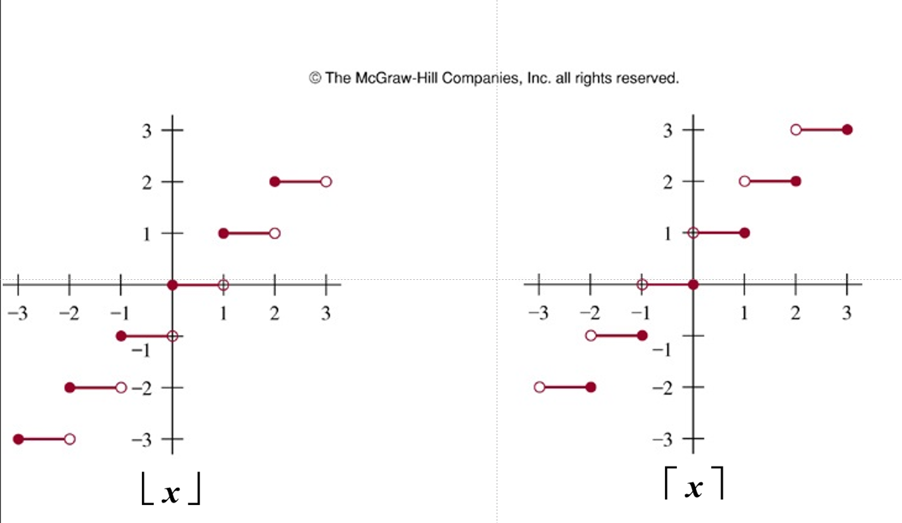
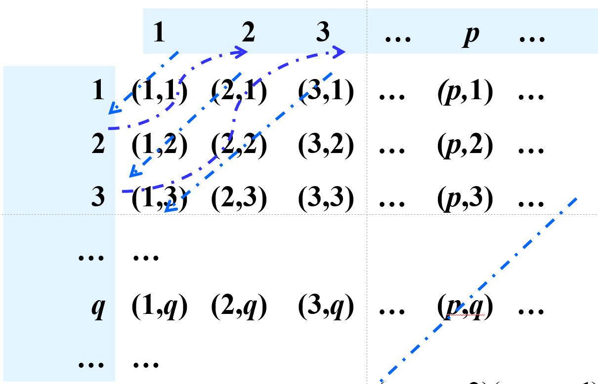
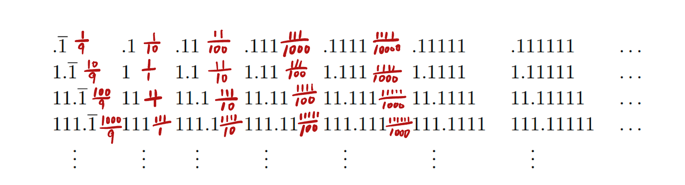

第二章:基础结构
2.1 集合
- 定义
- 无序对象集
- 对象可称为元素(elements)或成员(members)
- 一般用大写字母表示集合,用小写字母表示元素
- \(a\in A\) \(a\)是集合\(A\)中的一个元素 (\(a\not \in A\))
-
子集
- $A \subseteq B\iff \forall x(x\in A \to x\in B) $
- \(A = B \iff A \subseteq B\land B \subseteq A\)
- 真子集 \(\subset\)
-
幂集
- \(P(S) = \{x|x\subseteq S\}\) (此处\(x\)代表集合)
- \(|S|= n\) 代表\(|P(S)| = 2^n\)
$P(A)\in P(B) \implies A\in B $
- \(P(A)\in P(B) \implies P(A)\subseteq B\)
- \((A\in P(A))\land (P(A)\subseteq B) \implies A\in B\)
- 笛卡尔积
- \(A\times B = \{(a,b)|a\in A\land b\in B\}\)
- 没有交换律
- \(n\)个集合相乘,笛卡尔积就是\(n\)维的
- 任何集合与空集的笛卡尔积均为空集
2.2 集合操作
- 并集 \(A\cup B\)(Union)
- 交集 \(A\cap B\)(Intersection)
- \(|A\cup B| = |A| + |B| - |A\cap B|\)
- 集合的差 \(A-B = {x|x\in A\land x\not \in B}\)
- 补集 \(\overline{A} = \{x|x\not \in A\land x\in U\}\)
- 对称差 只属于集合中的一个
如何证明两个集合相等?
- \(C=D \iff C\subseteq D \land D\subseteq C\)
- 使用集合描述式表达法
如何证明一个集合为空集
- 一般先正向思考
- 有时会使用反证法
- 集合相等
- 集合操作中的德摩根定律:
- $\overline{A\cup B} = \overline{A}\cap \overline{B} $
- $\overline{A\cap B} = \overline{A}\cup \overline{B} $
2.3 函数
- 定义
- \(f:A \mapsto B\) (function/mapping/transformations)
- $ \forall a(a\in A\rightarrow \exists! b(b\in B \land f(a)=b)) $
- \(A\) 定义域(\(domain\))
- \(B\) 值域(\(codomain\))
- \(f(a)= b\)
- b称作a在\(f\)作用下的像(\(image\))
- a称作b的原像(\(preimage\))
- \(f:A \mapsto B\) (function/mapping/transformations)
- 性质
- \((f_1 + f_2)(x) = f_1(x)+f_2(x)\)
- \((f_1f_2)(x) = f_1(x)f_2(x)\)
- \(f(S) = \{ f(s)| s\in S\}\)
- 函数的图像
- 将\(\{(a,b)|a\in A \land f(a) = b \}\)绘制在一个坐标系中
- 单射与满射
- 单射 (\(one-to-one/injective\))
- $\forall a\forall b(f(a) = f(b) \to a=b) $
- 满射 (\(onto/surjective\))
- $\forall b \in B\exist a\in A(f(a) = b) $
- 一一映射 (\(bijection\)) 既是满射又是单射
- 函数类型
- 单调递增/递减函数
- 反函数(只有一一映射才有反函数)
- 复合函数
- 高斯函数
- 向下取整(\(floor function\)) $\lfloor x\rfloor $
- 向上取整(\(ceiling function\)) $\lceil x\rceil $

2.4 序列
- 实际上是对有序数组的一种映射(数组往往是\(\{0, 1, 2,...\}\)或\(\{1,2,3,...\}\))
- 用\(a_n\)表示\(n\)的像
- 等差数列和等比数列
- 求和符号\(\sum_{i=m}^{n} a_i\)
- 常见的求和公式:

2.5 集合的基数
- 基数的定义
- 定义 1: \(A\)的基数和\(B\)相等, 表示为\(|A|=|B|\)当且仅当\(A\)和\(B\)之间存在一一对应关系.
- 定义 2: 如果从\(A\)到\(B\)存在一个映射, \(A\)的基数比\(B\)小, 写作\(|A| \leq |B|\).
- 此时如果他们基数不同,则我们说\(|A| < |B|\).
- Schrőder-Bernstein Theorem: 如果 \(|A| 和 |B|\) 满足 \(|A| \leq |B|\) 并且 \(|B| \leq |A|\), 那么 \(|A| = |B|\).
-
集合的有限与无限
- 有限的
- \(\{1,2,3\}\)
- 无限, 但是和正整数集有相同的基数(countable infinity set)
- $ \aleph_0 $ : 阿列夫零(描述可数无穷的集合如 \(\mathbb{N}\) )
- 如果 $|A| = |\mathbb{N}| = \aleph_0 $, 则 \(A\) 为可数无穷集合.
- 建立由\(|A| 到 |\mathbb{N}|\)的一一映射
- 一个集合是可数的当且仅当它的元素可以被一个正整数序列编号
- 证明:\(|A| = |\mathbb{N}|,\ \forall a\in A\{a = x\times y|x,y \in \mathbb{N}\}\)

- 有限的
-
集合基数的特殊性质:
- 没有无限集的基数小于可数集。
- 可数个可数集的并集是可数的。
Tips
- 当我们枚举从有限小数一直延长到无限小数的情况时, 需要把真正的"无限长"单独列举出来
- 如图所示, 用分数表示下的无限循环小数有很大区别

Note
- (0,1)实数集的基数和实数集大小是一样的
- 方法: 用tan(x)映射
证明: 1. 0至1之间的有理数是不可数的
- 记0~1之间的实数集为 \(A\) ( \(A = \{ x \in (0,1) | x \in \mathbb{R} \}\) )
- 证明
- 对0~1的所有小数进行编号
- \(d_{ij}\) 代表第i个数的第j位小数
- \(r_i = 0.d_{i1}d_{i2}d_{i3}...\)
- 只需构造 \(x = 0.x_1x_2x_3...\)
- 其中 \(x_i \neq d_{ii}\)
- 此时我们可以找到一个未被我们编号的小数,根据引言中的D2, 可知 \(|\mathbb{N}| < |A|\)
- 对0~1的所有小数进行编号
证明: 2. 幂集基数大于其原集
- \(|A|<|P(A)|\)
- 证明
- 假设相等, 则可以找到一个一一映射, $x_i \mapsto f(x_i)(原集的子集) $
- 我们构造一个集合, 包含所有满足不在自己映射的集合中的性质的元素
- 然而对于这个构造出的集合, 也会有一个元素的映射结果是它(满射的性质), 考虑该元素是否存在于这个集合中
- 存在, 则其应当满足这个集合中元素的性质, 即不在自己映射的集合中
- 不存在, 则其满足该集合的"入集条件", 应当存在
- 矛盾, 故假设不成立, 则幂集和原集基数不同, 同时我们找到原集到幂集的一种映射(\(x_i \mapsto \{x_i\}\)), 故得$|A|<|P(A)| $
证明: 3. 在实数域下有|[0,1]| = |(0,1)|
- \(|(0,1)| \leq |[0,1]|\)
- \(\because (0,1) \subseteq [0,1] \therefore |(0,1)| \leq |[0,1]|\)
- \(|(0,1)| \geq |[0,1]|\)
- 构造一个映射$g :x \mapsto \frac{1}{2}x+\frac{1}{4} $
- 得\(|[0,1]| = |[\frac{1}{4}, \frac{3}{4}]| \leq |(0,1)|\)
-
字符串的可数性 !!! note "证明由可数字符集\(a\)构成的有限字符集\(S\)是可数无限的" - 证明无限性: 一个字母构建的, 两个字母构建的... 可以无限构造下去 - 对1, 2, ...个字母构建的字符集, 我们可以将其以字典序排列, 再对其编号, 从而找到一个由\(\mathbb {N}\) 到该字符串集的双射
-
函数的可计算性
- 可计算的: 如果存在某种编程语言中的计算机程序可以求出该函数的值
- 不可计算的: 反之
- 连续统假说
- 实数集的大小是最小的不可数无限集合\(\aleph_1\)